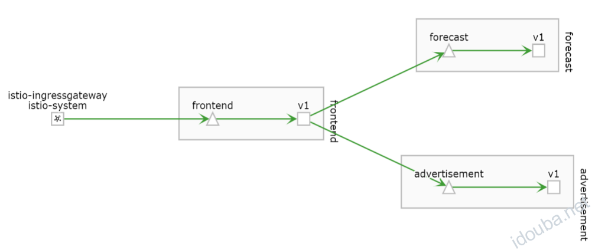
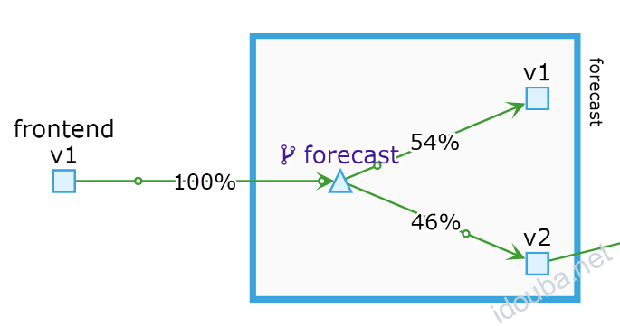
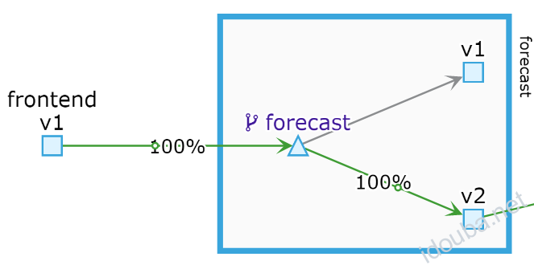

Istio灰度发布实践 –《云原生服务网格Istio》书摘05
本节书摘来自华为云原生技术丛书《云原生服务网格Istio:原理,实践,架构与源码解析》一书实践篇的第10章灰度发布实践。更多内容参照原书，或者关注容器魔方公众号。作者：star
目前一些大型的互联网或金融行业的公司，都有自己的发布系统。但是对一些初创公司，从零开始构建这样一套系统并不简单，有一定的门槛。利用Istio提供的流量路由功能可以很方便地构建一个流量分配系统来做灰度发布和AB测试。
预先准备：
将所有流量都路由到各个服务的v1版本
在开始本章的实践前，先将frontend、advertisement和forecast服务的v1版本部署到集群中，命名空间是weather，执行如下命令确认Pod成功启动：
$ kubectl get pods -n weather
NAME READY STATUS RESTARTS AGE
advertisement-v1-6f69c464b8-5xqjv 2/2 Running 0 1m
forecast-v1-65599b68c7-sw6tx 2/2 Running 0 1m
frontend-v1-67595b66b8-jxnzv 2/2 Running 0 1m
对每个服务都创建各自的VirtualService和DestinationRule资源，将访问请求路由到所有服务的v1版本：
$ kubectl apply -f install/destination-rule-v1.yaml -n weather
$ kubectl apply -f install/virtual-service-v1.yaml -n weather
查看配置的路由规则，以forecast服务为例：
$ kubectl get vs -n weather forecast-route -o yaml
apiVersion: networking.istio.io/v1alpha3
kind: VirtualService
……
name: forecast-route
namespace: weather
……
spec:
hosts:
- forecast
http:
- route:
- destination:
host: forecast
subset: v1
在浏览器中多次加载前台页面，并查询城市的天气信息，确认显示正常。各个服务之间的调用关系如图10-1所示。

图10-1 各个服务之间的调用关系基于流量比例的路由
Istio能够提供基于百分数比例的流量控制，精确地将不同比例的流量分发给指定的版本。这种基于流量比例的路由策略用于典型的灰度发布场景。
1．实战目标
用户需要软件能够根据不同的天气状况推荐合适的穿衣和运动信息。于是开发人员增加了recommendation新服务，并升级forecast服务到v2版本来调用recommendation服务。在新特性上线时，运维人员首先部署forecast服务的v2版本和recommendation服务，并对forecast服务的v2版本进行灰度发布。
2．实战演练
（1）部署recommendation服务和forecast服务的v2版本：
$ kubectl apply -f install/recommendation-service/recommendation-all.yaml -n weather
$ kubectl apply -f install/forecast-service/forecast-v2-deployment.yaml -n weather
执行如下命令确认部署成功：
$ kubectl get po -n weather
NAME READY STATUS RESTARTS AGE
advertisement-v1-6f69c464b8-5xqjv 2/2 Running 0 33m
forecast-v1-65599b68c7-sw6tx 2/2 Running 0 33m
forecast-v2-5475655ff9-zq68g 2/2 Running 0 11s
frontend-v1-67595b66b8-jxnzv 2/2 Running 0 33m
recommendation-v1-86f5448b7d-xdc72 2/2 Running 0 23s
（2）执行如下命令更新forecast服务的DestinationRule：
查看下发成功的配置，可以看到增加了v2版本subset的定义：
$ kubectl get dr forecast-dr -o yaml -n weather
……
spec:
host: forecast
subsets:
- labels:
version: v1
name: v1
- labels:
version: v2
name: v2
这时在浏览器中查询天气，不会出现推荐信息，因为所有流量依然都被路由到forecast服务的v1版本，不会调用recommendation服务。
（3）执行如下命令配置forecast服务的路由规则：
$ kubectl apply -f chapter-files/canary-release/vs-forecast-weight-based-50.yaml -n weather
查看forecast服务的VirtualService配置，其中的weight字段显示了相应服务的流量占比：
$ kubectl get vs forecast-route -oyaml -n weather
apiVersion: networking.istio.io/v1alpha3
kind: VirtualService
metadata:
……
name: forecast-route
namespace: weather
……
spec:
hosts:
- forecast
http:
- route:
- destination:
host: forecast
subset: v1
weight: 50
- destination:
host: forecast
subset: v2
weight: 50
在浏览器中查看配置后的效果：多次刷新页面查询天气，可以发现在大约50%的情况下不显示推荐服务，表示调用了forecast服务的v1版本；在另外50%的情况下显示推荐服务，表示调用了forecast服务的v2版本。我们也可以通过可视化工具来进一步确认流量数据，如图10-2所示。

图10-2 通过可视化工具进一步确认流量数据（4）逐步增加forecast服务的v2版本的流量比例，直到流量全部被路由到v2版本：
$ kubectl apply -f chapter-files/canary-release/vs-forecast-weight-based-v2.yaml -n weather
查看forecast服务的VirtualService配置，可以看到v2版本的流量比例被设置为100：
$ kubectl get vs forecast-route -oyaml -n weather
apiVersion: networking.istio.io/v1alpha3
kind: VirtualService
metadata:
……
name: forecast-route
namespace: weather
……
spec:
hosts:
- forecast
http:
- route:
- destination:
host: forecast
subset: v1
weight: 0
- destination:
host: forecast
subset: v2
weight: 100
在浏览器中查看配置后的效果：多次刷新页面查询天气，每次都会出现推荐信息，说明访问请求都被路由到了forecast服务的v2版本。可通过可视化工具进一步确认准确的流量数据，如图10-3所示。

图10-3 通过可视化工具进一步确认流量数据（5）保留forecast服务的老版本v1一段时间，在确认v2版本的各性能指标稳定后，删除老版本v1的所有资源，完成灰度发布。
基于请求内容的路由
Istio可以基于不同的请求内容将流量路由到不同的版本，这种策略一方面被应用于AB测试的场景中，另一方面配合基于流量比例的规则被应用于较复杂的灰度发布场景中，例如组合条件路由。
1．实战目标
在生产环境中同时上线了forecast服务的v1和v2版本，运维人员期望让不同的终端用户访问不同的版本，例如：让使用Chrome浏览器的用户看到推荐信息，但让使用其他浏览器的用户看不到推荐信息。
2．实战演练
参照10.2.2节在集群中部署recommendation服务和forecast服务的v2版本，并更新forecast服务的DestinationRule。
执行如下命令配置forecast服务的路由规则：
$ kubectl apply -f chapter-files/canary-release/vs-forecast-header-based.yaml -n weather
在浏览器中查看配置后的效果：用Chrome浏览器多次查询天气信息，发现始终显示推荐信息，说明访问到forecast服务的v2版本；用IE或Firefox浏览器多次查询天气信息，发现始终不显示推荐信息，说明访问到forecast服务的v1版本。
3．工作原理
使用kubectl命令查看forecast服务的路由配置：
$ kubectl get vs forecast-route -oyaml -n weather
……
hosts:
- forecast
http:
- match:
- headers:
User-Agent:
regex: .*(Chrome/([\d.]+)).*
route:
- destination:
host: forecast
subset: v2
- route:
- destination:
host: forecast
subset: v1
在上面的路由规则中，match条件使来自Chrome浏览器的请求被路由到forecast服务的v2版本，使来自其他浏览器的请求被路由到forecast服务的v1版本。